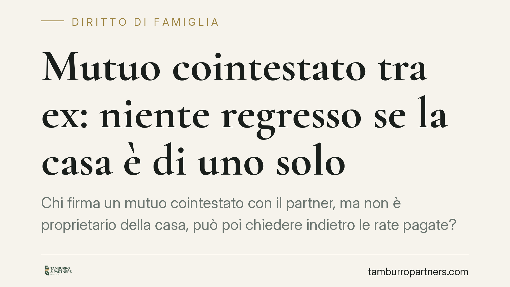

Mutuo cointestato tra ex: niente regresso se la casa è di uno solo
Chi firma un mutuo cointestato con il partner, ma non è proprietario della casa, può poi chiedere indietro le rate pagate? Il Tribunale di Palermo risponde di no quando la cointestazione serviva solo come garanzia nell'interesse del vero proprietario. Una pronuncia che incide su separazioni e divorzi, dove il nodo dei debiti bancari resta tra i più spinosi da sciogliere.

Il caso
Due ex coniugi avevano acceso insieme un mutuo. L'immobile acquistato, però, risultava di proprietà esclusiva di uno solo dei due. Dopo la rottura, il coniuge non proprietario ha chiesto all'altro il rimborso della quota di rate che riteneva di aver pagato, invocando il diritto di regresso che normalmente spetta al condebitore solidale.
Il Tribunale di Palermo, Seconda Sezione civile, ha respinto la domanda. Secondo i giudici, la firma del coniuge non proprietario non lo rendeva un vero cointeressato al debito: la sua partecipazione al mutuo era una semplice garanzia, prestata nell'interesse esclusivo di chi la casa l'avrebbe davvero avuta.
Inquadramento normativo
Il punto di partenza è l'art. 1298 del Codice civile. La norma stabilisce che, nei rapporti interni tra condebitori solidali, l'obbligazione si divide tra loro in parti che si presumono uguali, salvo che sia stata contratta nell'interesse esclusivo di alcuni di essi. In quest'ultimo caso, chi ha pagato può rivalersi per intero su chi aveva l'interesse al debito.
È qui che si gioca la decisione. Verso la banca entrambi i coniugi restano obbligati in solido: l'istituto può pretendere l'intero da ciascuno. Ma nei rapporti *interni* tra i due, la ripartizione non è automaticamente paritaria. Se la casa è di uno solo, l'interesse economico al mutuo è concentrato in capo al proprietario. Il coniuge cointestatario ha solo rafforzato la posizione della banca, non ha acquistato nulla.
In questa lettura la cointestazione del mutuo si avvicina alla funzione di una fideiussione: chi firma garantisce l'adempimento altrui. E il garante che paga ha diritto di rivalersi sul debitore principale, non di dividere con lui il peso a metà.
Implicazioni pratiche
La conseguenza è netta. Il coniuge non proprietario che abbia versato rate non può automaticamente chiedere all'ex la metà di quanto pagato come se fossero condebitori alla pari. Deve invece dimostrare quale fosse l'assetto reale: chi era il proprietario, chi aveva l'interesse all'acquisto, come venivano gestiti i pagamenti.
Attenzione, però: la pronuncia non vale come regola fissa per ogni mutuo cointestato. È una decisione di merito, legata ai fatti specifici. In molti casi il mutuo è contratto nell'interesse comune, magari perché la casa è intestata a entrambi o perché i coniugi la usavano insieme. In quelle ipotesi il regresso paritario resta pienamente operativo.
Il criterio decisivo è l'interesse economico sottostante: a chi serviva davvero quel finanziamento. La titolarità dell'immobile è l'indizio più forte, ma non l'unico. Contano accordi, bonifici, contributi documentati, dichiarazioni rese al momento dell'acquisto.
Per chi affronta una separazione, questo significa che il debito bancario non si liquida a tavolino dividendo le rate a metà. Va ricostruito il senso dell'operazione, con documenti alla mano.
Cosa fare in concreto
- Ricostruite la titolarità dell'immobile. Verificate dall'atto di acquisto chi è il proprietario effettivo e in quali quote: è il primo elemento che orienta la ripartizione del debito.
- Raccogliete la prova dei pagamenti. Estratti conto, bonifici, addebiti automatici: serve dimostrare chi ha pagato cosa e con quali fondi.
- Chiarite subito la natura della cointestazione. Se avete firmato solo come garanzia, documentatelo: accordi scritti, mail, scambi al momento della stipula possono fare la differenza.
- Inserite il mutuo negli accordi di separazione. Consigliamo di disciplinare espressamente chi paga le rate e con quali effetti sui rapporti interni, evitando contenziosi futuri.
- Valutate la posizione verso la banca. Ricordate che l'istituto resta libero di pretendere l'intero da chiunque abbia firmato: una rinegoziazione o un accollo vanno concordati con la banca, non solo tra ex.
La pronuncia di Palermo invita a non dare per scontata la divisione a metà. Prima di chiedere o concedere un rimborso, è utile capire chi aveva davvero interesse a quel mutuo.
---
*Contributo informativo a cura di Tamburro & Partners - Avv. Giuseppe Tamburro. Non costituisce parere legale.*
Ogni famiglia ha il suo equilibrio.
Separazione, divorzio, affidamento, assegno: se vuoi un confronto riservato su una specifica situazione, scrivi allo studio. Ti rispondiamo entro un giorno lavorativo.